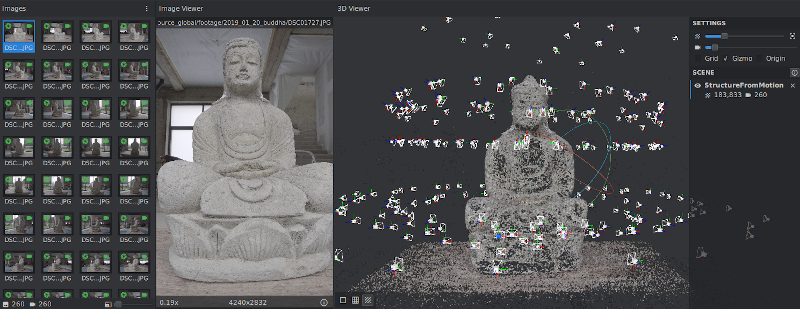

Research axes
LabCom ALICIA-Vision aims at capitalizing on the AliceVision pipeline and its software environment with ambitious objectives to develop new AI algorithms along four research axes.
Improving the performance and robustness of the 3D reconstruction pipeline

Camera tracking by localization and tracking of moving objects
Extraction of geometric and photometric characteristics in a multi-view pipeline
Determination of materials in a multi-view pipeline